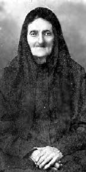

www.nbasil.com
This website documents some of the stories, oral histories and ancestry of the Kouklakis and Angavanakis families of Kefalas, Crete, Greece. Its focus is mainly on the family trees of Rev. Costas J. and his wife Catina (Angavanakis) Kouklakis (Kouklis).
Family surnames referenced in this website, in addition to Kouklakis and Angavanakis, include: Angisoulakis, Saatsakis, Gianikou, Papadakis, Railakis, Spirdakis, Papidakis, Gaidakis, Marousis, Tzeranis, Vorinakis, Kouklis and others.
As this website is written in the English language, Greek people- and place-names are transliterated; therefore, there may have been other possible spellings (i.e., Agavanakis).
First published: February 10, 1998; updated March 2012; updated August 2014.
Part I - Crete (brief history and description of the village of Kefalas, Crete; family stories, life in Crete; World War II)
Part II - "Ameriki"
Part III - Family Tree - Kouklakis/Saatsakis-Giannikou (stories, family tree)
Part IV - Family Tree - Angavanakis/Papadakis/Angisoulakis/Railakis/Papadakis (stories, family tree)
Costas J. Kouklakis (Kouklis) and Catina Angavanakis Kouklakis (Kouklis), engagement photo,1936.
The families are from the village of Kefalas, on the Greek island of Crete. Kefalas is in the mountains of the Drapanos peninsula, county of Apokoronas, in the western part of the island. Kefalas is thought to have been founded about 1175 A.D. during the Greek Byzantine empire under Emperor Michalis Komnenos - the leaders were called "Kefalades" according to one version. From 1200 to 1700 A.D. Crete was a part of (occupied by) the republic of Venice. It is known that Venetians had homes and businesses in Kefalas including olive oil presses and houses with arched doorways, many of which can still be seen. The present school at the village square is on the site of a Venetian olive-oil press, whose stone walls were until recently still visible. Many wells, walls and a few buildings from the Venetian era still exist, including the church of Timios Stavros. Beginning around 1669 Kefalas was under Ottoman Turkish occupation until the autonomous Cretan Republic was established in 1898. Crete was united with Greece in 1913.
On the left is a view of Kefalas taken from the balcony of the Angavanakis house in approximately 1990. The large building to the left is the village school. The road to Kefalas was paved in 1964; the village recieved electricity in the late 1970's. Today Kefalas is still relatively unspoiled, and many of the old homes have been renovated by their owners or by developers; most have been renovated in the traditional Cretan style. If you visit the village, you will still see many small churches, fields of olive trees and of course the prickly pear "papoutsosika" trees. In the spring, wild iris blooms, and in the summer, bright red bougainvillea flows over the old stone walls. The narrow lanes are still picturesque, despite the building of new homes by developers in what used to be empthy areas of the village. In the background, you might still hear goat bells ringing along with the sounds of chickens and roosters.
If you drive to Kefalas from Hania (via Vamos), you will end up at the village square, where you will see the churches of Agios Antonis (built 1862) and down an alley, the church of Timios Stavros (built in the 1500's). At the square, there is also a World War Two memorial, the village school (built in the 1920's), and a bust of Captain Mathaios Mylonogiannis, a local rebel leader of the 19th century. There are also a couple of cafes (kafeneia) near the square. The road to the left leads to Katohori or "lower village" and to the right is Panohori or "upper village" (during the Venetian era and afterwards, these were two separate entities, Kato Kefalas and Pano Kefalas). The Angavanakis house is uphill to the right, just before the church of Michail Archangelos (built 1880). The Kouklakis ancestors are buried at the church of Prophet Ilia, high at the western edge of the village, and the Angavanakis church was the church of Agia Irini at katohori.
Costas was born in 1911 in the city of Hania (in English, also spelled Chania, Khania), Crete, about an hour's ride from Kefalas. His family was from Kefalas, and he grew up there. Catina was born in Kefalas in 1914, and lived in the village with her family. Catina and Costas and their friends walked to school to the town of the capital of the county of Apokoronas, about 6 miles away.
Below left, a picture of Costas at age 12, with his father, Rev. Ioannis Kouklakis. Below right, a photo of Catina (on the right, with her sisters Lilika left and Irini, seated).
Right: Costas as a lieutenant in the Greek army (he went on to become a captain).
Left: Catina at age 19, in 1934.
1934 - Left: A photo of Catina and Costas with their "parea" or group of friends in Kefalas. Costas is at the top of the photo. Catina is in the white coat. Two of the women are fraternal twins Hariklia and Katina Pothoulakis.
Right: another photo of Catina taken in 1934, age 19.
More photos of Rev. Costas, early years.
The Angavanakis family was 'royalist', i.e., they supported the King of Greece, while the Kouklakis family supported prime minister Eleftherios Venizelos; therefore the two families were not especially close. One day Costas went to the cafeneion frequented by the royalist men to find John Angavanakis, to ask if he could marry his daughter Catina. After some discussion, John agreed and asked Costas what he wanted as a dowry, which was the custom at the time. Costas replied that he wanted no dowry, only that he loved Catina and wished to marry her. John gave them his blessing to marry. [Story related by Thia Stella]. They did receive a small grove of olive trees as a wedding gift from Catina's parents, which were sold prior to their leaving for America.
Catina and Costas were married in 1936, in Kefalas. The service was performed by Costas's father, Rev. Ioannis Kouklakis.
In this wedding photo, right, Costas is in the suit and tie, and Catina is in the white wedding dress. They are standing with Costas's sister Katina (Galanakis) to his right, and Catina's sister Stella (Papidakis) to her right. Seated is Costas's father, Rev. Ioannis Kouklakis. The lady in the middle is Maria Marousakis; the other lady is unidentified. (June 21, 1936)
In 1932, Costas went to theological seminary at the monastery of Agia Triada Tzangarolon, left (founded in the 11th century, restored in the 16th), in Crete's Akrotiri peninsula. Before their marriage, Catina worked in Hania as a secretary at the offices of the Bishop of Kydonia, and lived with her Thia Smaragdi address Thrakis 11, Koumkapi.
In 1937, he was ordained as a Greek Orthodox priest (right).
After their marriage, Costas and Catina lived in Kefalas, where Costas served as a priest in the churches of the village. When Costas and Catina were first married, Catina's father would get up early on Sunday mornings to ring the church bell (which was Costas's job), so that the 'newlyweds' could spend the morning together. [Story related by Thia Chrysoula].
They had three children: Maro (Maria), John and Kriti (Crete).
In keeping with tradition, they named their first girl and boy after the childrens' grandparents (coincidentally both grandfathers were named John (Ioannis) and both grandmothers Maria). Crete, born during the war, was named after the island, by her Godfather, who knew that the family would be leaving Crete and going to America after the war; he wanted them to always remember their homeland. It is said that Catina was quite upset when she heard that her daughter would be named "Kriti". As a girl's name, Crete is an unusual one in Greece as well as elsewhere.
Below is a composite photo of Catina, Costas and Maro, made in 1937.
The village, as well as the rest of the island, came under Nazi German occupation after the heroic Battle of Crete in May 1941. Below are some family events and memories from the war and occupation:
A German soldier was stationed as a lookout on top of the family windmill (overlooking the Bay of Souda). One day, while chatting with Thia Stella, the soldier attempted to kiss her. Immediately, Stella stopped him, said no, and warned him that if her father found out about this he would kill him, regardless of the consequences. This same soldier received a letter from home, and showed it to Thia Stella. Thia Stella pointed to the stamp (a picture of Hitler) and said to him in German, "Hitler nichts gut" ("Hitler is no good"). The soldier told Stella that he agreed with her, but if anyone overheard her, she could get killed. Rev. Costas was a commissioned officer in the Greek army and somehow got stranded in Athens for a long period of time. He and Catina communicated by letters, written in a "secret" combination of Greek and French that only they understood. The censors in Hania asked Catina to tell her husband to keep his letters short...they took too long for them to investigate. Maro remembers German soldiers giving her chocolates. The Germans would frequently conscript citizens for work details. When they would come for Catina, she told them, "Kinder, kinder"...indicating that she had small children, and they would pass her by. The family remembers food shortages and recall eating carob pods, a food usually fed to animals, during some periods of these shortages during the war.] A German commandant, along with the village mayor, came to the house one evening to inspect it in order to have soldiers stay there for the evening. Aunt Lilika said in Greek to the mayor "Don't think about putting those horrible Germans here!" , thinking that the commander didn't understand Greek. He replied to her in Greek, "Young lady, that is not a very respectful way to speak to the mayor". Lilika was terrified after that...and thankful she wasn't hurt or killed.The same German leader would visit the house often...and would frequently lament about the war's devastation, and about how he missed his family. He would say to the family in Greek and Italian "You are a 'famiglia extra prima'". After his return to Germany during the war, he corresponded with uncle Ioannis Angavanakis and the family. One of Catina's and Thia Stella's close friends in Hania was a Jewish woman named Sarah Osman. Thia Stella had a picture of Sarah with her husband, taken on their wedding day in front of the Torah of the Hania Synagogue. Along with the rest of the Jewish population of Hania, Sarah was deported by the Nazis during the war. At one point during the war, the men of Kefalas had gone off to the the mountains to join the guerillas, and the Germans came around to the village houses to round up the women, to hold as hostages, to force the men to return. The women of Kefalas were taken some kilometers out, and walled up in an outdoor area. One night, they felt some things raining down on them and thought, "What are these #@** doing to us now, stoning us?" But it turned out that some German soldiers were throwing chocolate bars over the wall to them. Eventually the women were released.
During the war, Catina and Costas decided that they would emigrate to the United States in order to make a better life for their family. In 1946, Costas left his village and family and immigrated to the United States. His boat docked at the port of Philadelphia. He did not speak any English but planned to learn it in the new country. He was assisted in making his trip by an uncle in Canonsburg, Pennsylvania, Efthmios "Tim" Cookles, who was married to Persephone (Percy) Zolintakis. Here is a photo of Costas and his uncle.
Costas's first parish was in Rock Springs, Wyoming. After one year there, he sent for his wife and children.
At right is Catina's passport photo, 1946.
1947: At left: Costas, Catina, Maro, Johnny and Crete at their first home in America in Rock Springs, Wyoming.
Catina and children Maro, John and Crete, left the Island of Crete in December, 1946 for Piraeus (the port of Athens), where they boarded a refurbished troop-ship called the "Katoomba", which was built in Belfast in 1913, and named after an Australian city.
The Katoomba is pictured below in an old photo:
The voyage was not smooth as it was druing the winter of 1946-47. Catina kept a diary of the trip to America; in it she mentions the turbulence and how her children were frequently sick during the voyage. Many days were spent staying in the cabin due to the rough seas. She writes that they attended a Greek Orthodox church service on board ship on Christmas Day 1946. She also mentions the ship stopping at the ports of Genoa, Italy, Oran, Algeria and the Straits of Gibraltar before crossing the Atlantic and arriving in New York City harbor on January 9, 1947. Another Katoomba passenger, reunited with the family in the 1970's, remembers Catina on this boat with her three seasick children. [Fani Koutsobaris of Clarksburg, WV].
The family was reunited in Rock Springs. Here is a photo of Catina in 1947. In Rock Springs, daughter Georgia was born.
Below is a photo of the family in Rock Springs, Wyoming, 1948 (Catina is "expecting" Georgia):
In 1950, Costas was transferred to a parish in Stockton, California. Son Costas Jr., was born there. Costas wrote some short stories of his first experiences in the United States. Topics include "grocery shopping" and "respect for the flag". Click here to read his stories.
In 1952, the family moved to Tacoma, Washington, where Costas served the St. Nicholas parish for five years.
At a church picnic near Tacoma, WA, 7/25/1953:
In 1957, Rev. Costas was transferred to a parish in Lansing, Michigan. There he taught a course in Modern Greek at Michigan State University and also taught "Greek School" at the church on Saturdays, as he did at most of his parishes. There they had their sixth child, son Chris.
Right: Costas and Catina, Lansing, MI, 1958
Right: A family portrait, 1960. Top row: Catina, grandson Chris (Maro's son), Rev. Costas (holding son Chris), Johnny, Maro (holding her son Dino); Bottom row: Crete (holding cat), Costas Jr., Georgia.
Left: A family photo taken in Jamestown, NY, in 1964. Standing: Georgia, Johnny, Crete; seated: Catina, Costas; front: Chris, Costas Jr.
Rev. Costas was transferred to a parish in Jamestown, New York in 1962. That year, the family's surname was legally changed from "Kouklakis" to "Kouklis", which was the name most family members were using. While in Jamestown, Rev. Costas helped to build a new Greek Orthodox church (St. Nicholas) in 1968, after the old church was destroyed by fire. Also in 1968, Costas and Catina returned to Greece to visit, the first time since they'd left. They visited their brothers, sisters and Catina's mother, Maria Angavanakis, who was still living at the time in Kefalas.
In 1968, the family moved to Bloomfield Hills, MI, and in 1970 to San Francisco. In 1971, they moved to Vancouver, Canada. One year later, they moved to Houston, Texas. In 1973, the family moved to Clarksburg, West Virginia. Catina and Costas visited their brothers and sisters in Greece once again, in 1973. Rev. Costas passed away in 1979 in Clarksburg. Catina moved to Tacoma, WA. She passed away in 1988.
Here are photos of Catina, and of Costas in the 1970's.
Left: May, 1979: Catina's birthday
Right: Maro, Chris, Catina, Georgia, John, Andrew in 1980
Paternal Grandfather was Reverend Ioannis Kouklakis who was born in Kefalas in 1883 (pictured left).
Father Ioannis went to theological school in Iraklion, Crete's largest city. There he met a young woman from a prominent, wealthy family named Maria Saatsakis-Giannikou (born 1885), pictured right.
As the story goes, Maria ran off with him to Kefalas where they were married. Her family disapproved, and they didn't have much more to do with her after that. Life in a small village was a new and difficult experience for Maria, formerly a well-to-do city-girl, but the family managed. She entertained her children with on of her musical talents - playing the mandolin (she was also skilled at playing the piano). Rev. John was not only the priest of Kefalas, but also the teacher. Maria's and John's first child was Costas, and their other children were: Efthihia (died 1933), Katina (Galanakis), died 1997 in Athens, son George died 1971), Nikos (died 1975, children John, Lefteri); Aspasia "Soula", died 1999; Eleni - Elly (Nestoras Koutroupis) died 2007, and Efthimios (died 1962, children John and Christos).
At right is a photo of Rev. John with some of his many students at the Kefalas schoolyard. In 1998, the author met several of these students at the cafe in Kefalas; they were in their 90's and still fondly remembered their teacher.
Below are separate photos of Efthimios, Katina, and Nikos:
Rev. John Kouklakis died in Kefalas 1942; Maria died in Piraeus in 1954.
Rev. John Kouklakis's parents were Reverend Paraskevas Kouklakis (born about 1854) and Maria Marousakis (born about 1855).
The above photo of the "family patriarch" Rev. Paraskevas Kouklakis's family was taken around 1910.
Identifed to date: Bottom row, 3rd from left: Efthimios Kouklakis, who emigrated to Canonsburg, PA, USA, and the grandfather of Karen (Cooklis) Jendruczak. 4th from left: Reverend Paraskevas Kouklakis; 5th from left: his wife Presvytera Maria Marousis Kouklakis. Top row, 3rd from left: Reverend John Kouklakis (father of Rev. Costas Kouklis); Top row, 6th from left: Eleni Kouklakis Vorinakis, mother of Alexandria (Sandra) Fricchione and Kay Zabetakis. The remaining people in the photo are presumed to be the other children of Paraskevas and Maria; [Photo courtesy of cousins Karen (Cooklis) Jendruczak and Alexandria -Sandra- (Vorinakis) Fricchione].
Maria was the daughter of Ilias Marousakis (born 1830) of Kefalas and [first name possibly Areti] Tzeiranis of the nearby village of Drapanos. Rev. Paraskevas was known to have visited the Holy Land. Rev. Paraskevas's and Maria's children, in addition to grandfather John, were: Mihalis, Angeliki, Katina, Evanthea, Eleni, Efthimis and Aphrodite. Efthimis and Eleni immigrated to America; the other siblings moved to Piraeus, Greece. Rev. Paraskevas's father was Emmanuel (Manolis) Kouklakis (born about 1821) who had three brothers: Giorgios, Giannis and Petros. Manoli's other children in addition to great-grandfather Paraskevas were: Nicholas (moved to Hania), Emmanuel, and Georgios Kouklakis. Nicholas Kouklakis had a daughter and three sons: Maria, Emmanuel, Ilias and Epaminondas. Epaminondas's children were: Irene (Vancouver Canada); Vasiliki; Katina (Athens); Maria; Nicholas (Hania) [Nicholas's children are Maria and Epaminondas]; and Emmanuel, Hania (died 2000), his wife Irene,(children: Ioanna, Fotini, Epaminondas, and Michael. The senior Emmanuel Kouklakis's father was Konstantinos Kouklakis, born in Kefalas in 1781.
To read about distant 'Koukles' relatives in Tacoma, Washington and Utah, click here.
Maria Saatsakis-Giannikou's father was Captain Ioannis "Giannikos" Saatsakis (born about 1850), pictured right. He was a leader in several of the numerous insurrections in the late 1800's that led to Crete's independence from Ottoman Turkish rule and ultimately union with Greece.
Because of this, he was given the title of "Captain", and today there is a street, "Odos Giannikou", (left) named for him in Iraklion, the capital of Crete. On the street signs, below his name is also written "Hero of the city". Captain Giannikou's wife's first name was Aspasia.
Paternal family tree:
Catina's father was John Angavanakis, pictured left. In the photo, he is wearing the traditional Cretan outfit, complete with baggy britches, boots, and his Cretan knife sticking out of his cummerbund. He was born in Kefalas in 1882. In 1910, he emigrated to the United States to work, eventually traveling aboard the S.S. New York from Cherbourg, France, arriving at Ellis Island, NY. According to the boat records at the National Archives in Washington, D.C., he was originally destined to stay with cousins (?) in Milwaukee, WI by the name of Dimitrios Cavoulakis. The Archives list his statistics as: age, 28; hair,Auburn; eyes, gray; height, 5' 2 1/2", and that he was in possession of $30. Although the records state that he went to Wisconsin, family stories tell us that he eventually went to Utah where he worked in a mine. He returned to Crete just a few years later.
Upon his return to Crete, Ioannis (John) Angavanakis married Maria Papadakis (pictured right), daughter of Dimitrios Railakis (Dimitrios, born 1841, changed his last name to Papadakis.)
Catina's mother Maria was known in the village by her nickname, "Marigo". Thia Chrysoula relates that when John Angavanakis would go to the village square, holding his young daughters by the hand, people would look at brunette Catina and blonde Stella and comment, "John with daughters so beautiful, you will never have to put up a dowry!" Maria's and John's children in addition to Catina were Stella (Mihalis Papidakis), died 1998; two children: Magda (Lefteris Hatzioannou) children Hari and Fani; Sprio (Roula Xepapadaki) - children Stella and Irini).
Below is a photo of Stella:
Irene (Gus Gellepes), died 2004 (son Dan (Stacey Young [Yeronikakis]), daughter Maria.
John (died 1946);
Eleni "Lilika" (Kostas Kasiotis - Kasiotakis), died 2009; Chrysoula (Chris Christodoulou), daughter Mary; Dimitri "Mimi", (Paraskevi Tzangaraki) died 1992; children: Maria, John (Christina Livadas), children Dimitris, Panayotis and Giorgios.
Another son, George, died at less than a year old.
Below are photos of Chrysoula, Dimitri (with wife Voula), and Stella (with son Spiro):
The above photo includes both Angavanakis and Kouklakis families. It was taken on August 15, 1936 in the village. Costas is front row, left; Catina is at the right. Lilika and Chrysoula are top left. Stella, center top. Rev. Ioannis Kouklakis is center right (next to Catina). Above the bishop is Ioannis Angavanakis.
John Angavanakis died in 1943; Maria died in January, 1969. Here is a photo of the Angavanakis house in Kefalas. John's father was Georgios Angavanakis (his wife's maiden name was Mantoudakis). Their children, in addition to John were Mihalis, Chrisy, Dimitri, Anastasia, and Penelope. Giorgios's brothers were Nikolas and Mihali; Mihali died in 1868 in the battle of Vafes. As noted above, Maria Papadakis's father was Dimitrios Railakis (born 1840), whose nickname was "Papadakis" which became his last name. He was also known by the name "Ananias." 
Dimitrios Railakis Papadakis was married to Katina Angisoulakis (pictured right), who was born about 1840 and died about 1928. His brothers were Georgios Railakis and Rev. Stilianos Railakis (known as a man who "loved to have a good time (glendi) and an excellent singer - but a very good priest as well"). Dimitrios's and Katina's children, in addition to Maria, were Phillipos (Canonsburg, PA), Smaragdi (Piperakis), Garifalia (Tsinitakis), Evlambia (Voutetakis), Argyro ([Daveronas], who lived in Davenport Iowa), and Christos (worked as a postman). Dimitrios Railakis was called "Papadakis" because his father was a papas (priest), Rev. Christodoulos Railakis, known as "Papachristodoulos" (born 1814). Here is a picture of Papachristodoulos's communion chalice, which has inscribed on it a cross, his name and the year "1870".
Katina Angisoulakis was the daughter of Phillipos Angisoulakis, nicknamed "Anagnostis" - deacon; he was reputed to be about 100 years old when he died (born about 1825; died about 1925). Phillipos's other children were Nikolis, Petros and Sprios [married to Terpsichori Koufakis]. Phillipos Angisoulakis is pictured here:
Phillipos Angisoulakis was married to Maria Spiridakis (born about 1840, whose original family name was Gaidakis). Maria's father was Spiros Gaidakis (born in Kefalas in 1817). He took on the surname "Spiridakis". Spiros was the son of [Emmanuel ?] Gaidakis born in Kefalas in 1793.
Maternal family tree:
{kind=link}
{kind=link}
{kind=link}
{kind=link}
{kind=link}
{kind=link}
{kind=link}
.jpg){kind=link}
{kind=link}
{kind=link}
{kind=link}
{kind=link}